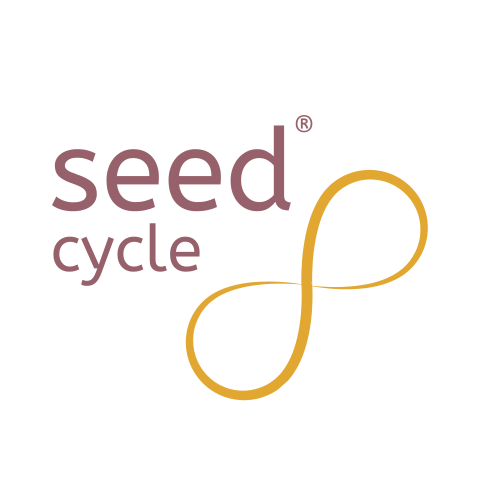

To speak with Luna, your browser needs microphone access. Your audio is only used during this conversation.

Your Seed Cycle® Guide
Luna can answer your questions about seed cycling and female health.
Or ask about seed cycling